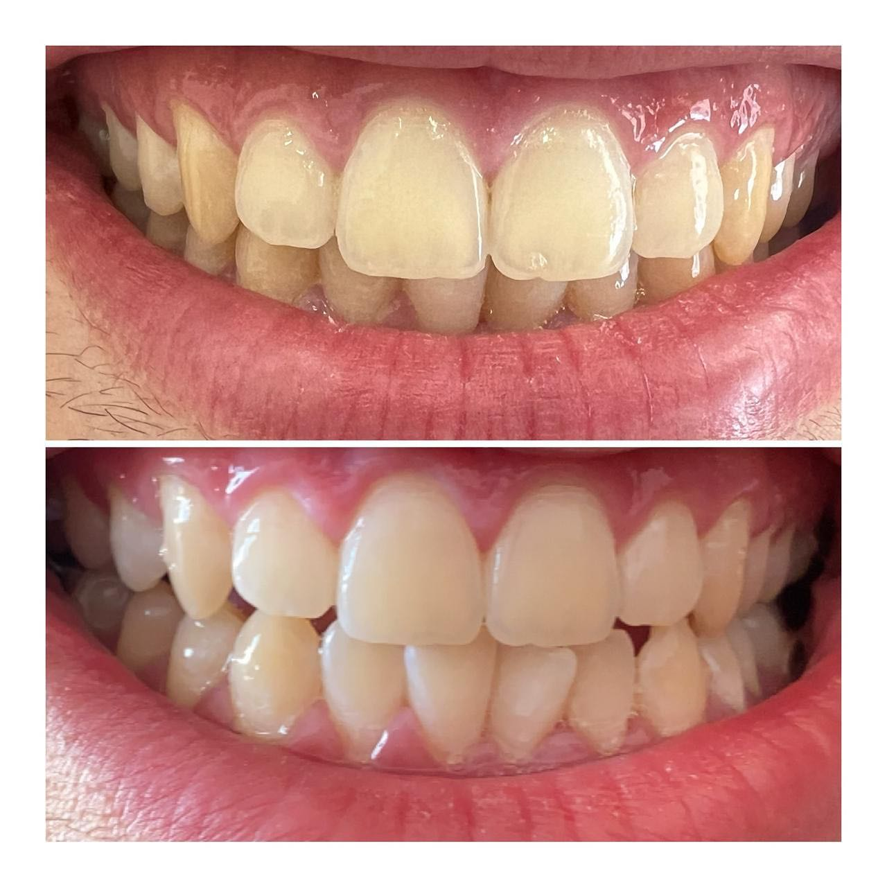
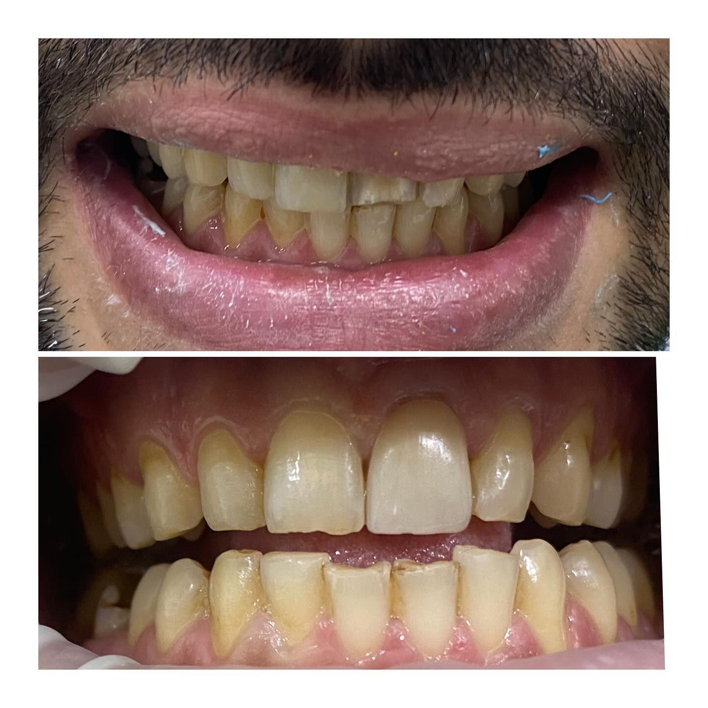
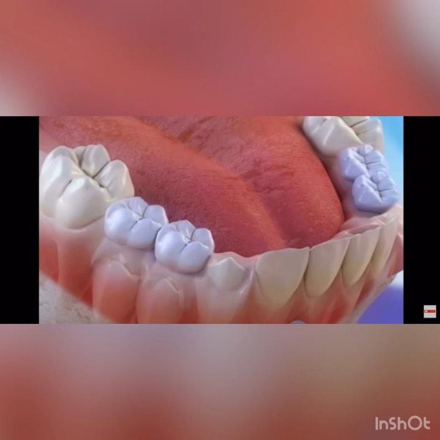
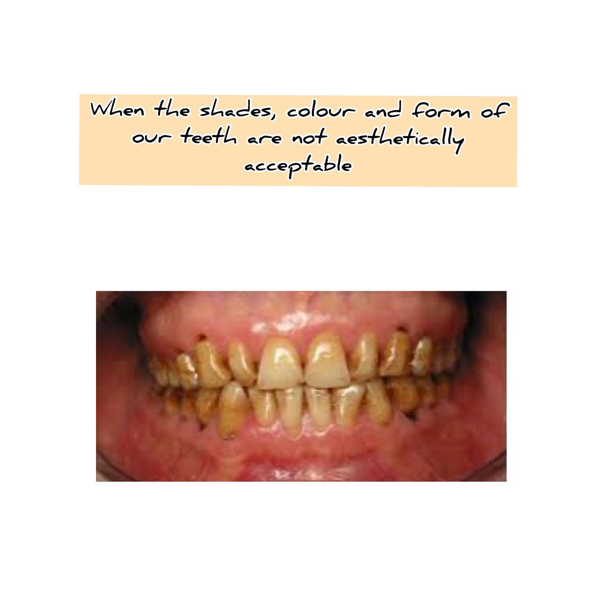

Sometimes 2 single tooth can change a smile! Old and first case ü¶∑ welcome back for more!
De la m√™me mani√®re qu‚Äôun artiste utilise les pinceaux et la peinture pour cr√©er ses ≈ìuvres, le dentiste doit respecter des param√®tres pr√©cis pour faire de votre sourire, le sourire id√©al.üòäü¶∑
Le Digital Smile Design (DSD) est un outil mis au point par Christian Coachman qui facilite énormément la réhabilitation dentaire en utilisant des photos et vidéos.
Les proportions faciales et dentaires sont analysées et les relations entre les dents, les gencives, les lèvres et le sourire sont définies avec précision.
Sur la base de ces informations, il est possible de faire une simulation digitale du sourire idéal, que le dentiste transformera en modèle du patient pour parvenir à une maquette.
On présente au patient le futur résultat avec un essayage en bouche comme on peut le voir sur la vidéo.
At @dental_clinic_casablanca.

Teeth whitening ü¶∑
A natural beautiful smile and +1 happy patient! üçÄ
Petit aper√ßu sur le collage d‚Äôune facette dentaire en c√©ramique ü¶∑üòÅ
Couronnes et facettes dentaire ü¶∑
La prochaine étape : pose d’implant avec Dr. BENCHEKROUN @dentalclinic_maroc dentalclinic_casablanca


“Parfois, il suffit d’un détail — un sourire retrouvé — pour réécrire tout un chapitre de vie.”
Composite fait à main levée en une séance pour rendre au patient un sourire confortable
A new smile and a happy patient!

✨ Un sourire transformé en toute subtilité ✨
Quatre facettes céramiques pour corriger l’esthétique tout en préservant la naturalité.
Minimalement invasif, durablement éclatant.
#SmileDesign #FacettesCéramique #DentisterieEsthétique #MinimalInvasiveDentistry

Petite vidéo pour les papas/mamans de mes patients.
Maintenir l'espace après l'extraction des dents de lait permet de prévenir l'orthodontie à l'adolescence.
